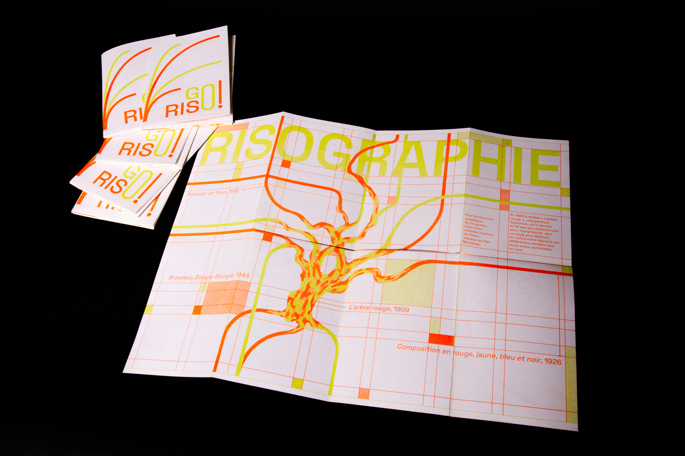
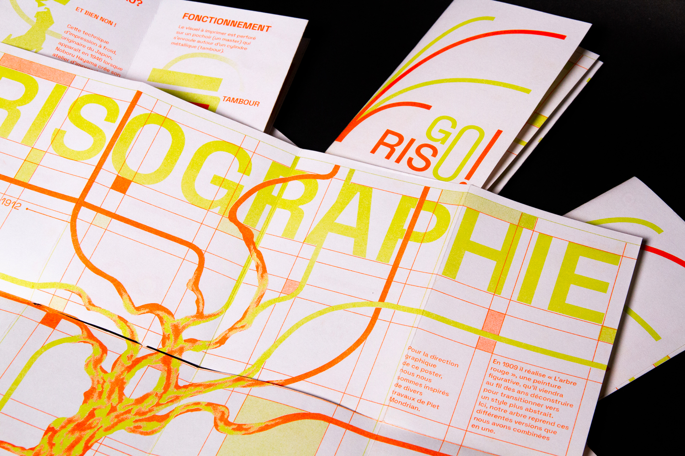
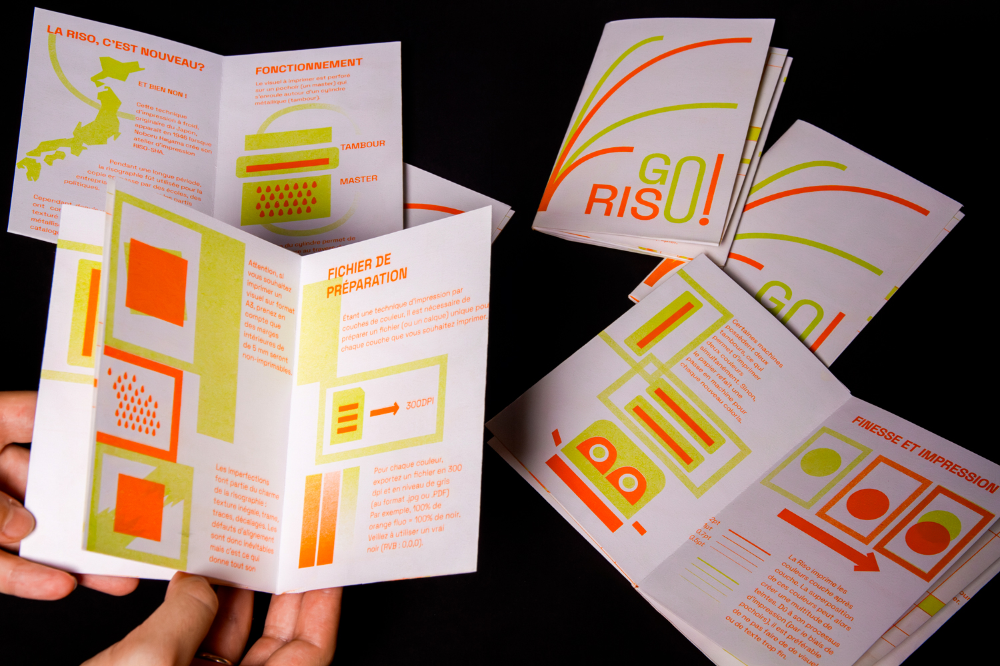

Fanzine GO RISO !
Ce fanzine, réalisé en binôme, fait suite à une collaboration avec l’imprimerie parisienne Quintal Éditions, spécialisée en risographie. Inspiré du style graphique des peintures figuratives et abstraites de Piet Mondrian, cette mimi édition est destinée à faire comprendre aux lecteurs la technique de la risographie. Vingt-cinq impressions ont été réalisées dans l’atelier même. Mon binôme, Lilian Genevrais, a dessiné les pictogrammes et mis en page le livret. J’ai écrit les textes et réalisé les illustrations sur le verso. Grâce à ce projet, nous avons fait la découverte de cette technique d’impression offset !


